@Home HRI

The system is composed of the following sections:
- HRI sub-system: This is what will be covered in this docs.
- 1. React Web App: Front end were data received from the robot is displayed in a user friendly way.
- 2. Flask API: Intermediary between ROS Nodes and React Frontend.
- 3. ROS Node: ROS Node that subscribes to topics that publish robot data.
- Other robot nodes: These nodes are part of the system of the robot. E.g:
- Main engine node
- Navigation Node
- Speech node
- Test publisher: This component consists of a node publishing mock data for the ROS Node Listener to receive.
React Web App
This module is implemented using a React JS. The UI is quite simple, it consists of a series of modular components. A component purpose is to display data from the robot in a user friendly way.
Image 1.0 Main UI view
In the green enclosed area of Image 1.0 the user can find example of components:
- Camera Feed
- System Health
- Active Robot Modules
In the pink enclosed area of Image 1.0 the user can find a button to open the Configuration Drawer.
Configuration Drawer
In the configuration drawer the user can perform the following actions:

Image 1.1 Configuration Drawer
Activating components
In the collapsed drawer that can be seen in Image 1.1, the user can find a checkbox for each implemented component. All components that are checked are displayed in the GUI.
To activate or deactivate a module the user has to check the respective checkbox.
Select a configuration
In the configuration drawer (Image 1.1) the user can find a dropdown menu button, when collapsed will display a series of options (Image 1.2).

Image 1.2 Configuration Selection
In the dropdown content displayed in Image 1.2 the user can find a list of current available configurations, the user can create configurations.
When the user selects a configuration the GUI will refresh and display the modules that are part of the selected configuration.
Create a configuration

Image 1.3 Create a configuration
At the bottom of the dropdown content (Image 1.2) displays a button for adding a config, when clicked a modal with a form for creating a config will be displayed (Image 1.3).
Provide a name for the configuration and check the modules that are part of the configuration and then click the create button.
After this the new configuration will be available for selection.
Edit a configuration
When a configuration is selected it can be edited by modifying the activated modules. As we can observe in Image 1.1 the current configuration is Mariano and it has 3 active modules, by checking/unchecking modules the user can modify the configuration.
When the user is done modifying the configuration it can be saved by clicking the Save button enclosed by the configuration selection dropdown (Image 1.1). After clicking the configuration will be updated.
Components
In the main UI view the user can find examples of components.
A component must have an specific purpose, examples are:
- Camera Feed: Displays camera feed received from the robot.
- System Health: Displays information about battery, cpu and ram usage.
- Active Robot Modules: Displays current active robot modules.
The following code is how a template component template looks like:
import { Box, Text } from "@chakra-ui/layout";
import React, { useState, useEffect } from "react";
import { socket } from "../services/socketConnection";
export default function ComponentTemplate() {
// State variables used for component with initial state as null.
const [var, setVar] = useState(null);
// Use effect for receiving robot socket messages.
useEffect(() => {
socket.on("ComponentTemplate", setVar);
return () => socket.off("ComponentTemplate");
}, []);
return (
<Box shadow="lg" p="4" borderRadius="lg" maxW="600px">
<Text fontSize="2xl" mb="4">
Hello World! {var}
</Text>
</Box>
);
}
The purpose of a component is to display information received from the robot in a user friendly way. Because of this, it is essential to establish a communication channel with the robot.
Components are stored in this directory.
The code underlined in green defines a state variable, the useState method returns a variable and a function call to set the variable, when this function is called the component will render again showing changes made by the variable. This variable purpose is to contain the information that is going to be displayed in the component. (More about react state variables at: https://es.reactjs.org/docs/hooks-state.html )
The code underlined in yellow uses a useEffect hook, that is going to execute the code block every time a message is received through the socket, this socket is used to receive messages from the Flask API. (More about react use effect hook at: https://es.reactjs.org/docs/hooks-effect.html )
The code underlined in blue defines the content of the component using JSX, the example shows a simple Hello World. Note that the var can be used in the content to display the information. (More about jsx at: https://es.reactjs.org/docs/introducing-jsx.html )
Examples
The following components are currently implemented:
- Robot Face
- Camera Feed
- System Health
- Robot Chat
- Active Robot Modules
RobotFace
The robot face is an interactive set of eyes (Image 1.6) that display emotions, this can be used as a way to interact with the robot that is familiar to humans.
Image 1.4 Neutral Robot Face
The code can be found here.
The face can display the following emotions:
- Happy
- Sad
- Angry
- Focused
- Confused

Image 1.5 Happy Robot Face

Image 1.6 Sad Robot Face

Image 1.7 Angry Robot Face

Image 1.8 Focused Robot Face

Image 1.9 Confused Robot Face
The idea is that the user defines the emotion response depending on what the robot is doing. The component receives the emotion through a socket using a hook:
useEffect(() => {
socket.on("RobotFace", setEmotion);
return () => socket.off("RobotFace");
}, []);
For example:
- Confused: This emotion can be sent to the component when the Robot did not understand an instruction.
- Focused: This emotion can be sent when the Robot understands the current instruction.
- Angry: This emotion can be sent when the Robot bumped into an obstacle.
- Happy: This emotion can be sent when the Robot receives a compliment.
Essentially the user defines what situations correspond to an emotion, this is sent from a ROS Node which is then read by the Flask API, this API ultimately sends it to the UI via sockets. This is a great tool for debug, because it is very simple to understand and is user defined.
It also supports two more settings: start: The robot will start blinking stop: The robot will stop blinking
Camera Feed
Image 2.0 Camera Feed Component
This component displays the camera feed that the robot sends through the system. The code can be found here.
The image is received through the socket:
useEffect(() => {
socket.on("CameraFeed", setImage);
return () => socket.off("CameraFeed");
}, []);
Then it is displayed in the HTML content of the component:
return (
<Box shadow="lg" p="4" borderRadius="lg" maxW="600px">
<Text fontSize="2xl" mb="4">
Camera feed
</Text>
{image && <img src={`data:image/jpg;base64,${image}`} />}
</Box>
);
System Health
This component displays data about system health from the robot.
Image 2.1 System Health Component
For now it displays the following information:
- Battery
- CPU
- RAM
More types of data can be added, the code can be found here.
The data is received from the robot:
useEffect(() => {
socket.on(SocketChannels.SYSTEM_HEALTH, (data) =>
setSystemHealth(JSON.parse(data))
);
return () => socket.off(SocketChannels.ACTIVE_MODULES);
}, []);
And then it is used to display it a user friendly way:
return (
<Box shadow="lg" p="4" borderRadius="lg" maxW="600px">
<Text fontSize="2xl" mb="4">
System Health
</Text>
<VStack divider={<StackDivider borderColor="gray" />} alignItems="start">
<Box>
<Icon boxSize="1.5em" mr="5" as={FaBatteryFull} /> Battery:{" "}
{parseInt(systemHealth[0])}%
</Box>
<Box>
<Icon boxSize="1.5em" mr="5" as={FaPercentage} /> CPU:{" "}
{parseInt(systemHealth[1])}%
</Box>
<Box>
<Icon boxSize="1.5em" mr="5" as={FaMicrochip} /> RAM:{" "}
{parseInt(systemHealth[2])}%
</Box>
</VStack>
</Box>
);
Robot Chat
This component was implemented using React Chatbox component, its functionality is to send and receive text messages to or from the robot.
Image 2.2 Robot Chat component
Message history is stored in the browser local storage.
Messages are received from the robot through the socket:
useEffect(() => {
socket.on("RobotMessage", setNewMessage);
return () => socket.off("RobotMessage");
}, []);
const storedMessages = getLocalStorageRobotChat();
if (newMessage != null && !messageExists(newMessage.id, storedMessages)) {
console.log("New Message: ", newMessage);
storedMessages.push(newMessage);
setLocalStorageRobotChat(storedMessages);
}
When a message is received it is verified that it hasn't been received yet, then it is stored in the history and the Chatbox component renders all messages:
return (
<Box borderRadius="lg" p="4" shadow="lg" w="600px">
<Text fontSize="2xl" mb="4">
Robot messages
</Text>
<ChatBox messages={storedMessages} user={user} onSubmit={sendMessage} />
</Box>
);
When the user sends a message using the Chatbox component, this message is stored in the history and then it can be sent to the robot using the HRI system by sending a POST request to the Flask API. This input can be used as raw input for the robot.
function sendMessage(message) {
const newMessage = {
text: message,
id: uuidv4(),
sender: {
uid: user.uid,
avatar: "https://img.icons8.com/cotton/2x/gender-neutral-user--v2.png",
},
};
// TODO: Add post to python API that communicates with ROS Node
// to send instruction.
setNewMessage(newMessage);
}
Active Robot Modules
This component displays which modules from the robot are currently active.

Image 2.3 Active Robot Modules component
The code can be found here.
The data is received from the robot through the socket:
useEffect(() => {
socket.on(SocketChannels.ACTIVE_MODULES, (data) =>
setActiveRobotModules(JSON.parse(data))
);
return () => socket.off(SocketChannels.ACTIVE_MODULES);
}, []);
Then the data is displayed in a friendly way:
return (
<Box shadow="lg" p="4" borderRadius="lg" maxW="600px">
<Text fontSize="2xl" mb="4">
Active robot modules
</Text>
<VStack divider={<StackDivider borderColor="gray" />} alignItems="start">
{Object.values(RobotModule).map((robotModule) => {
const active = activeRobotModulesMap[robotModule];
return (
<Box key={robotModule} color={active ? "green" : "gray"}>
{active ? (
<Icon as={FaCheckCircle} />
) : (
<Icon as={FaTimesCircle} />
)}{" "}
{mapRobotModuleToName(robotModule)}
</Box>
);
})}
</VStack>
</Box>
);
Creating a component
Creating a component is possible by following two simple steps:
- Adding a template
- Adding mapping methods and includes
Note that following these steps will only implement the component in the Web App (frontend). It is still necessary to implement the backend part, this consists of data collection and sending.
Adding a template
This step consists of adding the component React JSX file under this directory.
A barebone component looks like this:
import { Box, Text } from "@chakra-ui/layout";
import React, { useState, useEffect } from "react";
import { socket } from "../services/socketConnection";
export default function ComponentTemplate() {
// State variables used for component with initial state as null.
const [variable, setVariable] = useState(null);
// Use effect for receiving robot socket messages.
useEffect(() => {
socket.on("ComponentTemplate", setVariable);
return () => socket.off("ComponentTemplate");
}, []);
return (
<Box shadow="lg" p="4" borderRadius="lg" maxW="600px">
<Text fontSize="2xl" mb="4">
Hello World! {variable}
</Text>
</Box>
);
}
ComponentTemplate has to be substituted with the name of your component.
Setup receiving messages through the socket in the appropiate channel (backend sending messages still has to be implemented):
// Use effect for receiving robot socket messages.
useEffect(() => {
socket.on("ComponentTemplate", setVar);
return () => socket.off("ComponentTemplate");
}, []);
And then design the structure of the component:
return (
<Box shadow="lg" p="4" borderRadius="lg" maxW="600px">
<Text fontSize="2xl" mb="4">
Hello World! {variable}
</Text>
</Box>
);
Adding mapping methods and includes
For the component to display in the UI and configuration drawer it has to included in couple of files.
All components are refered to using an enum called ModuleIdentifier.
The component name has to be added the following way:
export const ModuleIdentifier = {
FACE: "face_module",
CAMERA: "camera_module",
SYSTEM_HEALTH: "system_health_module",
ROBOT_MODULES: "robot_modules",
CHAT: "chat_module",
NEW_COMPONENT_NAME: "new_component_name"
};
In the util library are located a couple of methods that provide the interface to display components in the UI.
In this file we have to include our component template:
import CameraFeed from "../components/CameraFeed";
import RobotChat from "../components/RobotChat";
import RobotFace from "../components/RobotFace/RobotFace";
import SystemHealthModule from "../components/SystemHealthModule";
import RobotModulesModule from "../components/RobotModulesModule";
import NewComponentName from "../components/NewComponentName";
Inside this library we can find two methods mapping methods that we have to add our new component:
mapModuleIdToComponent
This method maps the module Id (enum value) to the React component, the component has to be added the following way:
export function mapModuleIdToComponent(moduleId) {
switch (moduleId) {
case ModuleIdentifier.CAMERA:
return <CameraFeed />;
case ModuleIdentifier.CHAT:
return <RobotChat />;
case ModuleIdentifier.FACE:
return <RobotFace />;
case ModuleIdentifier.SYSTEM_HEALTH:
// TODO: implement system health.
return <SystemHealthModule />;
case ModuleIdentifier.NEW_COMPONENT_NAME:
return <NewComponentName />;
case ModuleIdentifier.ROBOT_MODULE
default:
// Return an empty div if the value is not recognized.
return <div />;
}
}
If the module id is not handled an empty div will be returned.
mapModuleIdToName
This method is for displaying the name of the component in the UI, it maps the module id to the name.
The component has to be added the following way:
export function mapModuleIdToName(moduleId) {
switch (moduleId) {
case ModuleIdentifier.CAMERA:
return "Camera feed";
case ModuleIdentifier.CHAT:
return "Robot chat";
case ModuleIdentifier.FACE:
return "Face";
case ModuleIdentifier.SYSTEM_HEALTH:
return "System health";
case ModuleIdentifier.NEW_COMPONENT_NAME:
return "NewComponentName";
default:
return "Unknown module";
}
}
If the module id is not handled "Unknown module" will be shown as name.